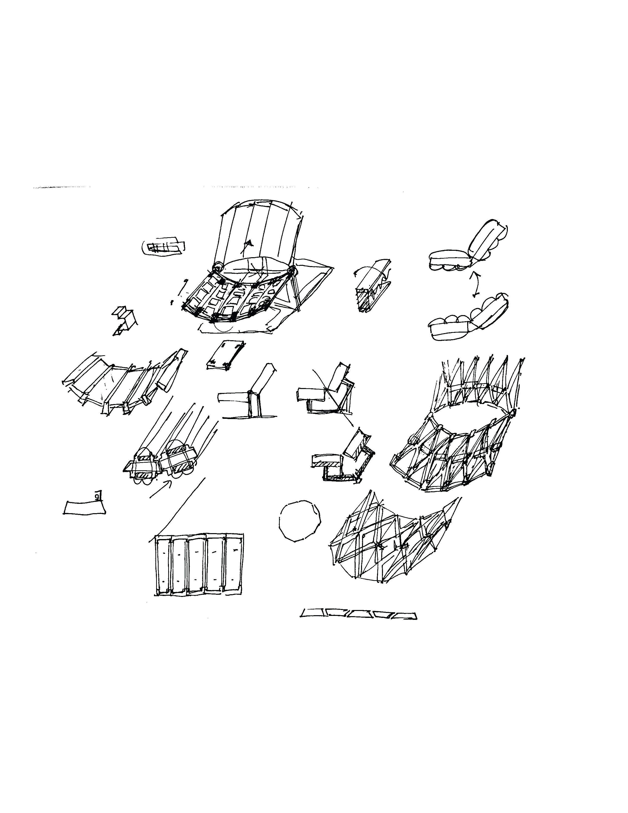
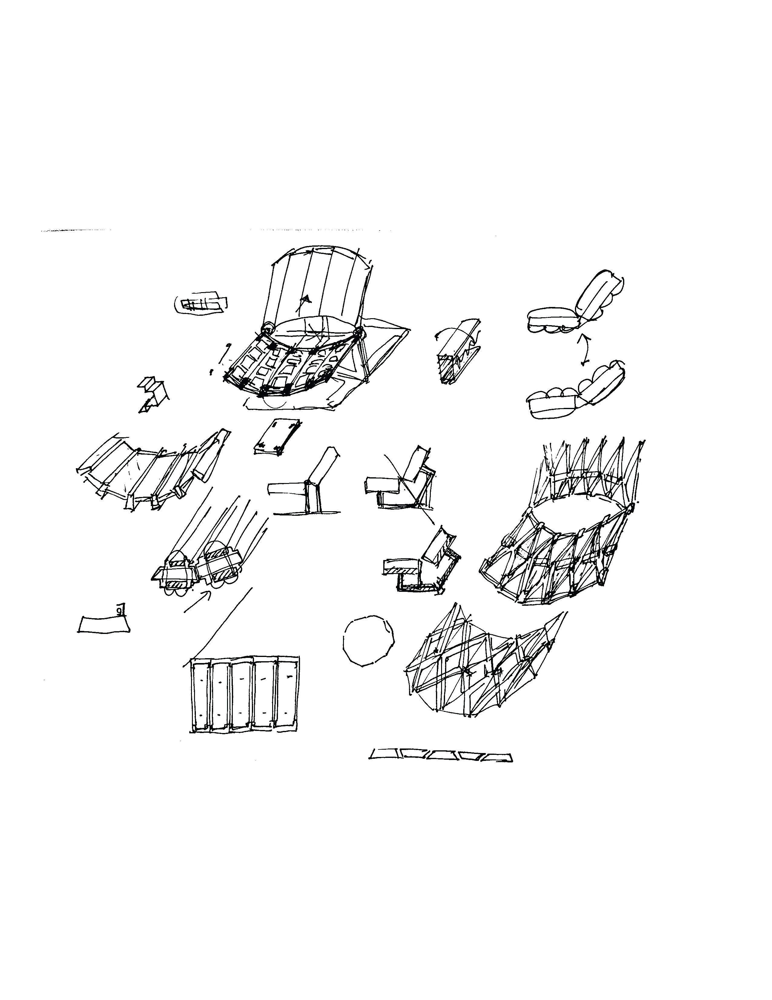
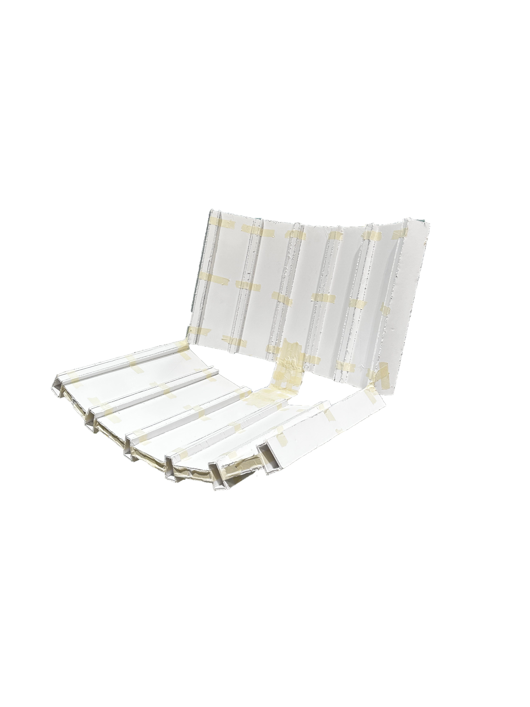
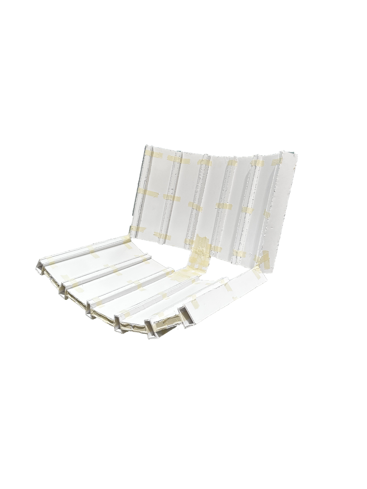
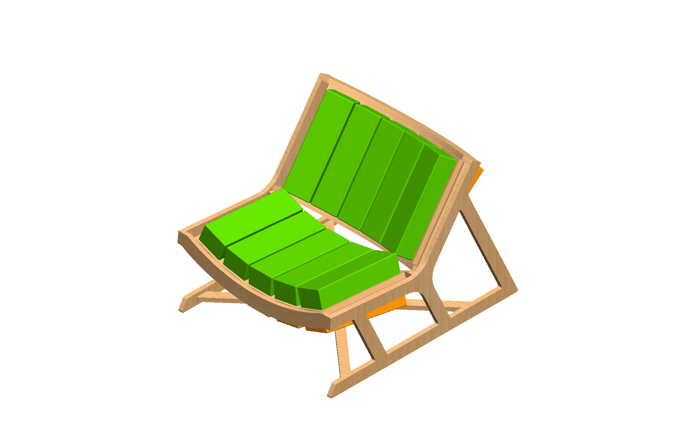
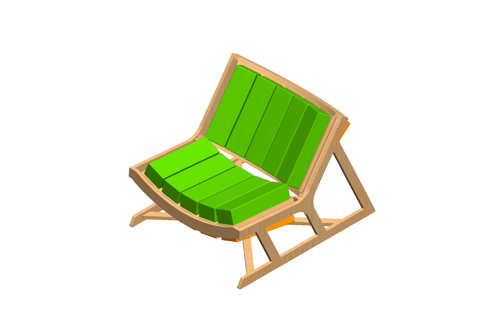
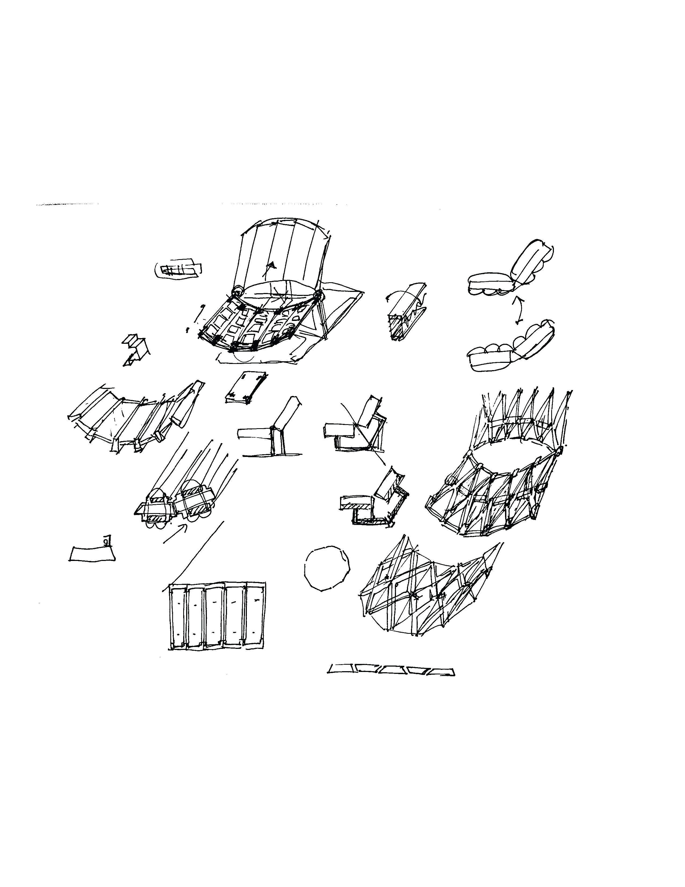
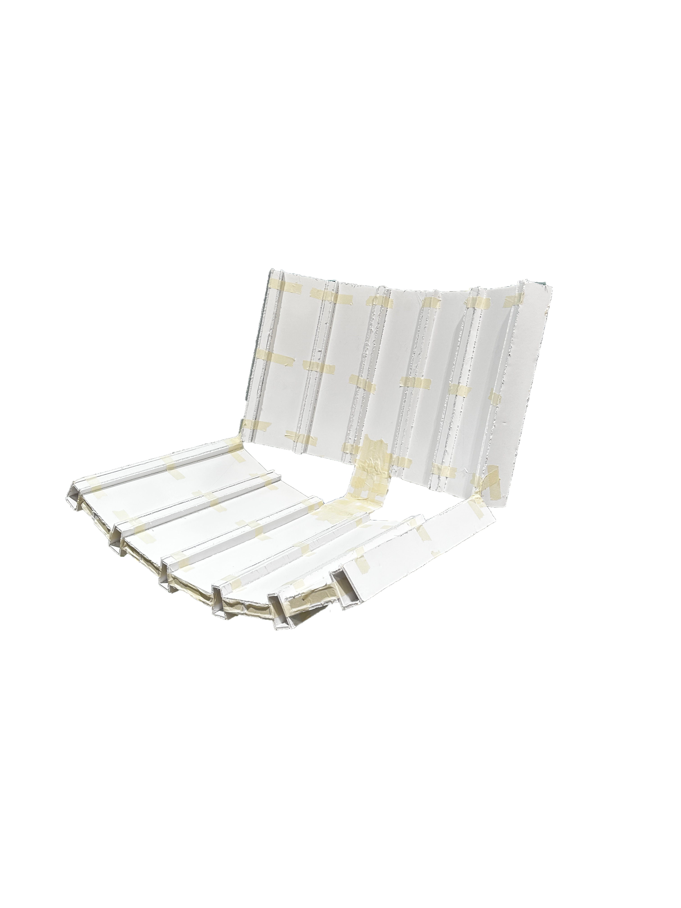
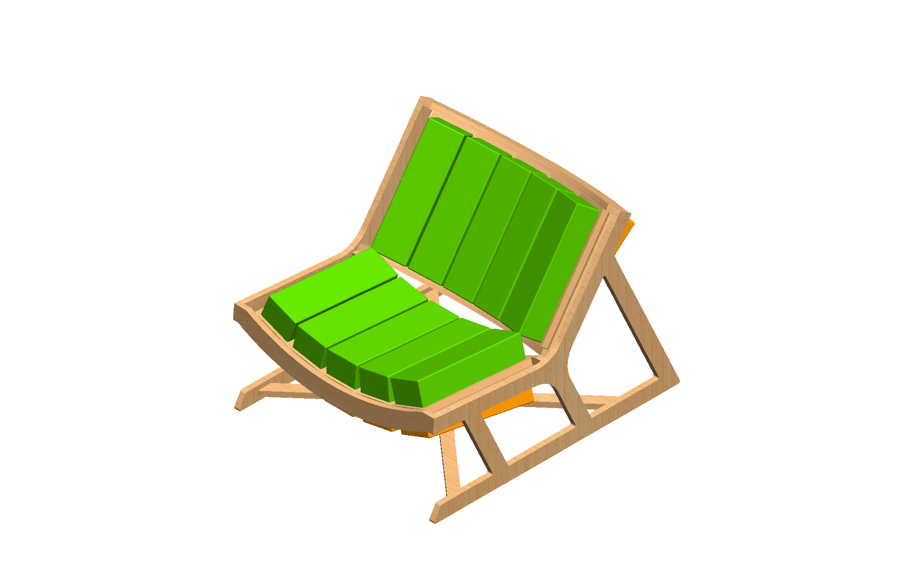

.png) 



 

Role: Designer
Date: 2024.Jan - 2024.Mar
Project Summary
The primary goal of this project was to design and create a furniture piece of choice. Since for a while
I have been yearning for a recliner chair, I decided to make one. I envisioned the chair to have features
such as a curved design for ergonomic comfort, modular components for customization, and an adjustable
reclining mechanism to change reclining angles.
The primary challenge I faced was designing a chair that seamlessly integrated all three key features —
curved sitting area, modularization, and adjustable reclining angles - without sacrificing the chair's
stability or aesthetic appeal. The challenge intensified ever since I made a crucial design choice that
the side profile of the chair will have a triangular design with 120 degree increments, which
also inspired the name "The 120" (it was originally called the "The Modular Recliner").
During the design process, 4 major CAD models (alongside with versions with minor changes) and 6 mockups
were made, each iteration slightly modified after user testing. Material testing and selection was a ping-pong
between aluminum and wood; although I preferred an aluminum frame for the chair, realistic issues such as
machine usage time and lack of experience in metal CNC machining led to making the chair in wood. However,
in the future, I would love to recreate the same chair out of metal.
The final product of the chair was showcased on the last week of the quarter at Ford Motor Company Engineering
Design Center alongside with a lookbook-style booklet that recorded the progress throughout the quarter.
Dual Cushion System
The alpha and omega of the chair, this feature defines the chair's very identity. I named it the "Dual Cushion System,"
since it sounds cool, and it is literally what it is.
1. Color Change
The cushions are designed so that they fit seamlessly inside the rib of the frame. Unlike most chairs, these
cushions are removable - they can be pulled up from its position, flipped, and pushed back in.
The color of each side was chosen purposefully to be on the opposite side of the color wheel (green and orange
are not opposite, but close enough) so that the same chair can give off a different look based on the user's preference.
2. Reclining Angle Adjustment
Along with the color, each side of the cushion has different angles. The green side are both flat, while as the orange
side has a 5 degree angle for the seat and a 15 degree angle for the backrest.
Sketches, Mockups, CAD, and Manufacturing
Download booklet.


